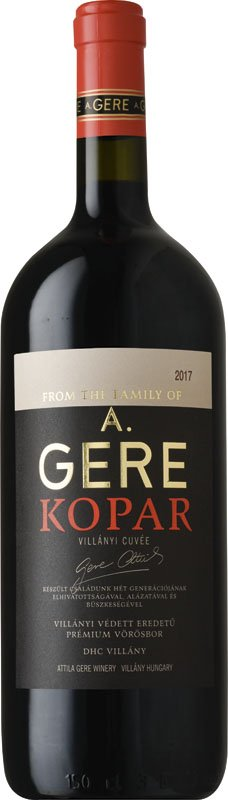
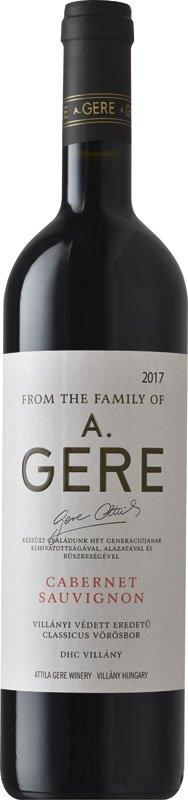
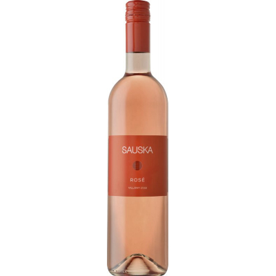
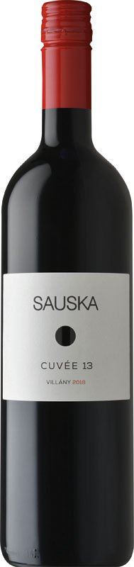
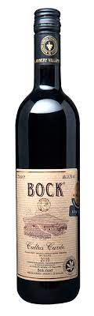

Mit találsz itt?
Népszerű bortermelőket
Napjainkban rengeteg bortársaság van. Jó helyen jársz, ha nem tudod melyiket válaszd.
Népszerű borokat
A termelőnél talán fontosabb a termés. Lentebb megtalálod, mit érdemes leemelni a boltok polcairól.
| Bortermelők | |
|---|---|
| Logó | Bemutatkozó videók |
 |
|
| Finom borok | |
|---|---|
|  |
Gere Kopár A Gere Kopár a pincészet emblematikus csúcsbora. Csak a legszebb évjáratokban készül Villány legjobb dűlőiből (Kopár, Csillagvölgy, Konkoly) szelektált alapanyagok felhasználásával. A mély, sötét színárnyalatok a megszokott koncentrációról árulkodnak. Illatában már most nagyon sokrétű; pörkölési aromák, fahéj, fekete szeder, cseresznye, érett meggy, pici borsosság, szegfűszeg, vanília, minerális jegyek. Ízében is kellőképp összetett. A borsos-minerális jelleg itt is jelen van, melyek cseresznyét és fekete bogyósokat gazdagítanak. A savak szépek, vibrálnak. A tanninok intenzívebb jelleget mutatnak, de borunk még gyerekcipőben jár. Lecsengése hosszú, a kishordós jelleg szépen megbújik a háttérben, így a gyümölcsöké maradhat a főszerep. Elegáns, kerek, gyümölcsös, ugyanakkor fajsúlyos, testes tétel, hosszú utóízzel és érési potenciállal. |
|  |
Gere Cabernet Sauvignon Aszalt szilva és meggy, fekete ribizli, kávés, kakaóbabos jegyek. Kóstolva elegáns és vibráló, mely nagyon szép komplexitással, és hosszú utóízzel párosul. A tudatos hordóhasználat jól integrálódik a fekete bogyós aromákba, melyeket némi fehérbors és keleti fűszerek gazdagítanak. A tanninok remekül támogatják a bort. |
|  |
Sauska Rozé Kortyolj bele a villányi borok hercegnőjének kikiáltott Sauska Rosé ízébe! Különleges stílusa teszi különlegesen elegáns rozévá, hiszen már színében is néhány árnyalattal visszafogottabb, azonban pirosribizlis illata és íze mindenért kárpótol! Minden túlzás nélkül állíthatjuk, hogy a Sauska Rozé az egyik legszebb és legfinomabb rozénk. Ajándéknak is kifejezetten jó döntés! |
|  |
Sauska Cuvée Cabernet sauvignon, merlot, kékfrankos, portugieser, cabernet franc házasítása. Élénk bíbor rózsaszínes karimával, friss és rendkívül üde. Illatában primer gyümölcsök, meggy és feketeszeder, meg a finom házi cseresznyekompót leve. Kortya játékosan könnyed és harmonikus, a ribizli friss savaival, lehelletnyi füstösséggel, selymes, lágy tanninokkal. Ajánlott fogyasztási hőmérséklet:12 °C. |
|  |
Bock Cultus Cuvée Karakteres, mediterrán villányi vörös házasítás Bock József pincéjéből. A feketebogyós gyümölcsök mellett a finom fűszeres jegyek, és a feszes, határozott ízvilág teszi igazi villányivá. Kínálhatjuk vadakkal, sült húsokkal és esti beszélgetésekhez keménysajtok mellé is. |